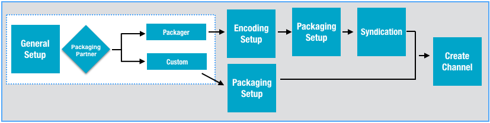

Use an informational name and description for general setup. Consider a channel
naming convention policy to more easily track the channels you create.
General Setup Workflow

Important: The settings during the initial Ooyala Live account configuration
determine which packaging and encoding options are available. The options you select
determine some of the options that appear on the following pages. This example
follows the channel setup when the Ooyala Package is selected
as the Packaging Partner.
Tip: In general you'll be required to include a slate when creating a
channel. To read more about slates, see
Slates.